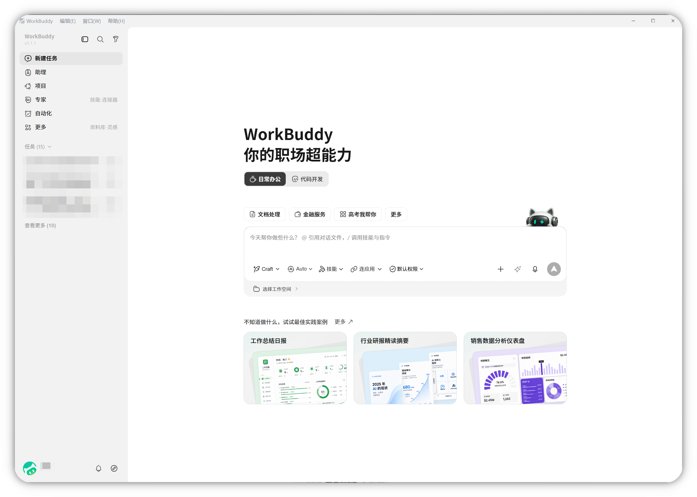
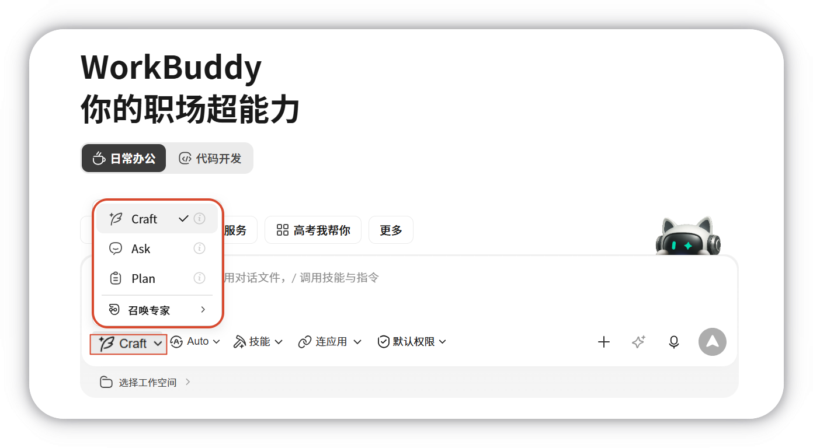
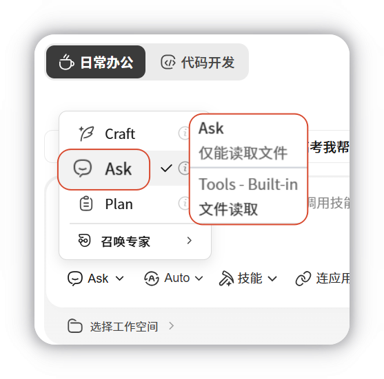
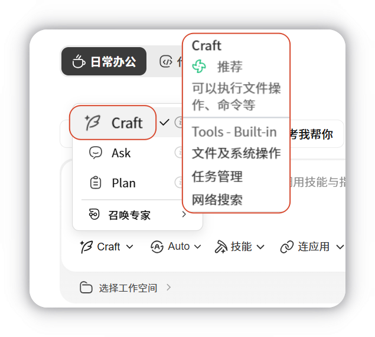
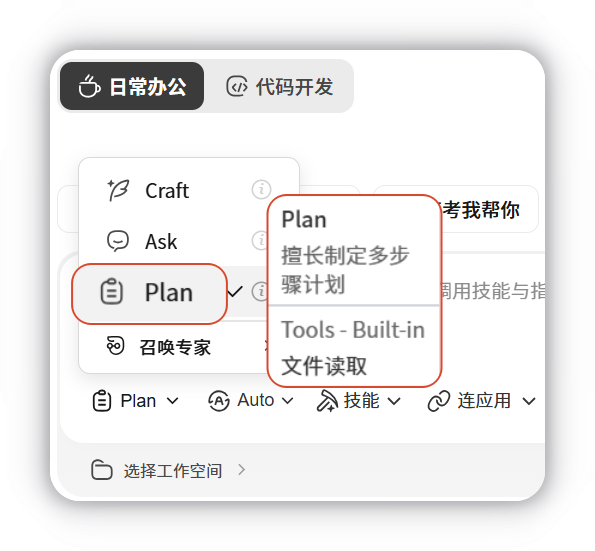
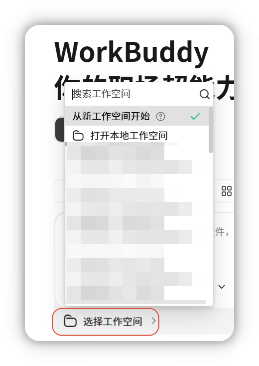
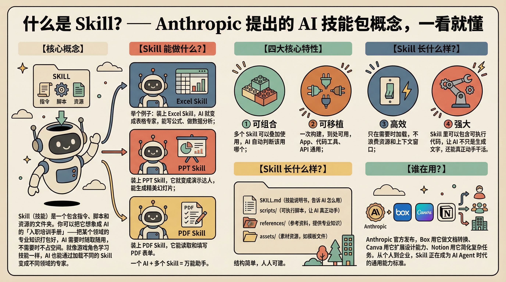
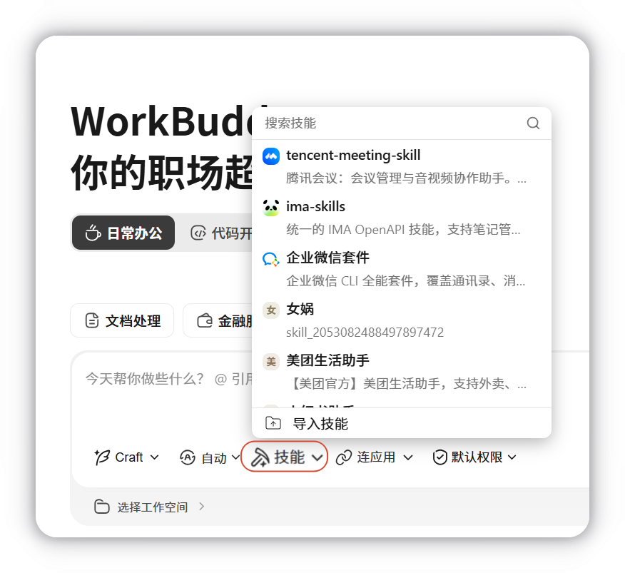
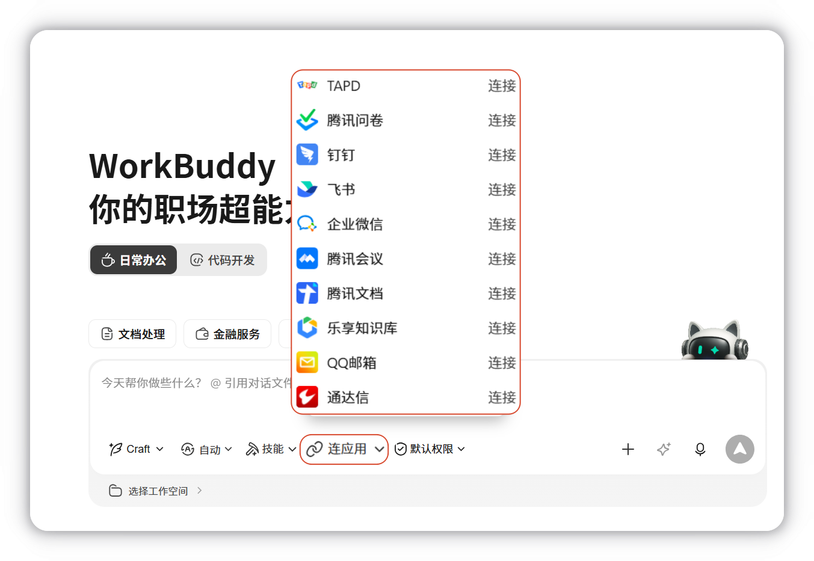
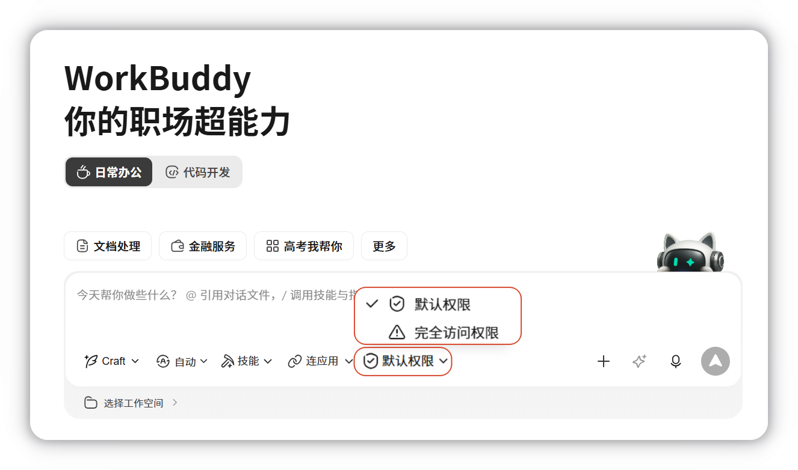

新建任务栏（本地 AI 工作台）
本地任务的统一入口如下：

一、界面介绍
工作模式
WorkBuddy 提供三种工作模式，对应不同的执行权限与交互方式：

| 模式 | 说明 | 适用场景 | 图片示例 |
|---|---|---|---|
| 问一问（Ask） | 仅问答与信息查看，不修改文件 | 了解内容、确认需求 |  |
| 做一做（Craft） | 直接执行任务并修改文件 | 文档生成、表格处理、文件整理 |  |
| 想一想（Plan） | 先生成执行计划，确认后再操作 | 多步骤任务、需审阅改动范围 |  |
建议
首次使用优先选择 Ask 模式；熟悉后再按任务复杂度切换至 Plan 或 Craft 模式。处理重要文件前请先备份。
切换模型
WorkBuddy 内置多个主流模型，可按需灵活切换：
| 模型 | 适用场景 |
|---|---|
| MiniMax | Excel 处理、数据分析、PPT 生成，执行速度快 |
| 智谱 GLM | 多步骤、长流程的复杂任务 |
| Kimi | 截图分析、图片转文档等视觉类任务 |
| DeepSeek | 日常问答、文案撰写，响应快、成本低 |
| 腾讯混元 | 中文写作、会议纪要、中文文档处理 |
设置工作空间
使用前建议先设置工作空间。 WorkBuddy 将在该空间中读取和保存文件，未指定路径的任务也会优先在此空间内执行。

什么是文件路径？
路径即文件或文件夹在电脑中的位置，示例：
- Windows：
C:\Users\你的用户名\Desktop\工作资料 - Mac：
/Users/你的用户名/Desktop/工作资料
无需手动输入——设置时直接在文件选择器中定位并选中目标文件夹即可。若未提前指定，WorkBuddy 会在新建任务时自动创建独立空间。
如何选择合适的工作空间？
建议按任务类型分别建立空间，例如 发票整理、周报、待处理照片 等，便于管理并降低误操作风险。
选择技能
技能（Skills） 用于扩展 WorkBuddy 的任务能力。启用对应技能后，系统可完成更多特定类型的工作。

在对话框中选择已安装技能，WorkBuddy 执行任务时将自动调用对应能力：

| 技能示例 | 效果 |
|---|---|
| PPT 制作 | 根据数据生成汇报演示文稿 |
| 海报生成 | 根据需求生成活动海报 |
| 自动化报表 | 合并多份 Excel 并输出图表报告 |
提示
WorkBuddy 内置 20+ 技能包，覆盖文档处理、数据报表、海报设计、文件整理等场景，同时兼容 OpenClaw 社区技能导入，也支持通过自然语言创建自定义技能。
连接第三方应用
快捷管理连接器，连接外部服务，扩展 AI 能力。

权限管理
- 默认权限： 涉及敏感操作，如文件修改或工作空间外执行时，需要用户确认执行或自行操作。
- 完全访问权限： 减少确认步骤，允许WorkBuddy直接执行更多操作。可能涉及敏感操作、文件修改或外部执行。仅建议在用户信任当前任务时使用。
说明
前往两个权限模式了解详情。

二、新建任务
每个对话对应一个 独立任务，任务之间互不影响，各自维护独立的工作空间与上下文。
- 在主界面点击 新建任务（若未提前指定目录，系统自动创建独立工作目录）；
- 输入任务内容、选择工作目录与模型后发送，即可开始执行。
执行中的任务显示在左侧边栏，可随时切换查看进度。WorkBuddy 支持 多任务并行处理。